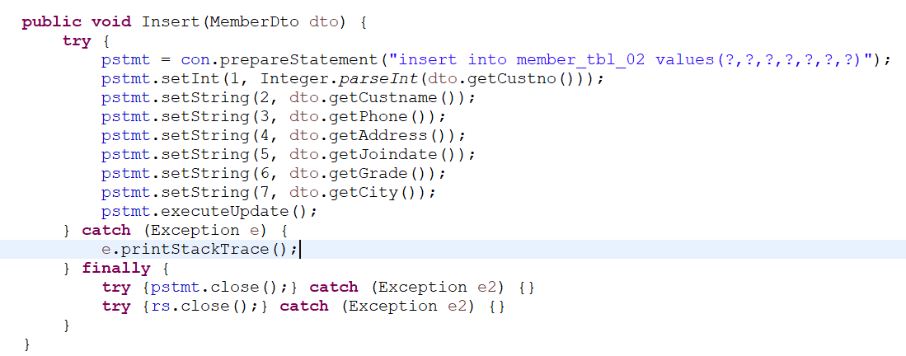

뒤로가기
5. javascript작업, Dao 작업 및 회원가입 완료.
1. jdbc작업
jdbc 연결부터 해두자.
참고 소스를 주긴 하지만 싱글톤 작업도 해야하고 하니 이렇게 적어쓰자.
자바 Dao 에다 이렇게 만들어 주자.
2. 우리가 Dao에서 작업해야할 것은 Insert(회원가입), UPDATE(회원정보 수정),SELECT(회원정보 조회),SELECTALL(회원매출 조회)이다
다음과 같은 Insert 방식으로 나머지도 만들어주자.
다 만들었으면 이제 Insert(회원가입) 작업 들어가자.
3. Insert 넣기.
insert 부분이다.

1)?,? 는 member_tbl_02를 만들때 들어간 컬럼의 개수만큼이다.(아님 넣을것만큼)
2) setInt 어쩌고 하는것은 우리가 dto에서 먼저 String 으로 값을 받았기 때문에 숫자형(Number)로 바꿔주기 위함이다.
나머지 부분은 딱히 찾아보는게 빠를거 같다.
다됬으면 이제 joinproc 부분으로 가자
4. joinproc 작업.
경로 import 로 잡아주고 dao.insert(dto) 해서 db에 값 들어가는지 해본다.
들어간다면 이렇게 나올 것이다.
5. 유효성 체크하기
DAO로 가서 insert 부분을 boolean 으로 잡아서 isok를 false로 준 다음 값이 들어가게 된다면 (result>0) 이 된다면
isok 가 true 가 되면서 db에 값이 넘거가게 만들어 준다.
이 후 procjoin.jsp 로 간 이후 아래와 같은 작업을 해준다. (isok 가 True 일 시 회원가입 성공)
회원가입이 완료 될 시 메인 페이지로 가게 되고 실패 시 다시 join.jsp 로 돌아가게 만들어 준다.
이 후 join.jsp 로 가서 form 태그의 onsubmit을 return false로 해준다(상황에 맞지 않을 시 클릭시 알려줌)

밑의 button 태그(등록)에 클릭을 하게 될시 일어나게 될 일을 명시해준다.(isValid())
footer 밑에 script 를 만든 후 아래와 같이 입력해준다.(빈 공간이 있을 시 입력하라고 알려줌.)
☆(document.joinfrm은 위의 form태그의 name인 joinfrm과 일치한다. form 태그)